CNBC
市值回補
近1兆美元
同一篇統計寫，市值回了近一兆美元。這是市值數字，不是收市升幅，亦不是納指表現，不可與百分之三十一點四八或納指百分之六點五一合併成一句。
效力：CNBC 市值回補數字，分源單列。
2026年11月24日 · 星期二科技要聞
英偉達董事會在收到美國政府高層意見後一致讓黃仁勳復職，獨立調查卻寫明會進行到結束。總統說他說服了董事會。股票一天升逾三成，市值回了近一兆美元。Google 搜尋的人工智能模式開始選接錢包。Sierra 六個月內估值翻到三百億美元。Anthropic 讓代理人按政策批准程式變更。
人物：Kara Swisher
為二零零三年五月以來最佳單日。市值回補與納指升幅在下方分源單列，不與這項升幅合併成一句。 CNBC
別把這份聲明讀成公司治理的勝利。這是一場股價保衛戰：門已經重新打開，調查卻還寫着「會進行到結束」。
十一月二十三日，英偉達董事會宣布，黃仁勳即時恢復擔任總裁、執行長並重返董事席。聲明寫，董事會在與他討論後一致通過，對其「坦誠」與領導能力感到滿意；決策過程中「收到美國政府高層的意見」，並據此「有信心，他的復職不構成國家安全風險」。財務長Colette Kress卸下臨時執行長，續任原職。公司將新設首席合規官，並另組獨立董事的國家安全與出口管制委員會。可是聲明也寫明：鑒於報道指他「成為外國情報活動的目標」，獨立調查「將進行到結束」，他本人支持並配合。復職是現在；結案是以後。把「無國安風險」當成調查結果，是公關口吻，不是調查結論。
總統唐納德·川普同一天對CNBC說，上週的市場拋售「大概」影響了他支持黃仁勳回歸，但「更大的影響是長遠」。他說自己「直接」與董事會談過，並且「說服」了他們，還說黃「沒做錯」。談到股價，他說那東西先前像朝錯誤方向飛的火箭，「現在朝正確方向，並帶着整個市場一起走。」董事會的用詞是「政府高層意見」；總統的用詞是「我說服了他們」。不要混成一句。
美聯社寫，董事會就在數日前才拒絕過他的回歸提議。參議院少數黨領袖查克·舒默等民主黨人隨即揚言，要調查復職始末與國家安全疑慮。《紐約時報》周日報道，與黃仁勳有婚外關係的Alice Huang，在往來期間至少有一段時間與中國國家安全部人員有接觸——這是報道，不是已在法庭上證實的事實；中國方面已否認間諜指控。同一人走回原位，股票一天可以改寫指數，獨立調查卻還在跑。先保住股價，再談還沒結束的問題：這是矽谷最老的權力遊戲，把白宮也寫進了劇本。
CNBC
市值回補
近1兆美元
同一篇統計寫，市值回了近一兆美元。這是市值數字，不是收市升幅，亦不是納指表現，不可與百分之三十一點四八或納指百分之六點五一合併成一句。
效力：CNBC 市值回補數字，分源單列。
CNBC
納斯達克綜合指數周一收市
6.51%
納斯達克綜合指數升百分之六點五一，為二零二五年四月九日以來最佳。這是指數數字，不是英偉達個股升幅，不可與百分之三十一點四八或近一兆市值合併。
效力：CNBC 納指數字，分源單列。
英偉達新聞室
獨立調查狀態
未結束
「無國安風險」是董事會根據美國政府高層意見的表述，不是調查結案。聲明寫獨立調查「將進行到結束」。川普對 CNBC 說他「說服」了董事會；董事會的用詞是「收到政府高層意見」。兩說分源，不合成一句。
效力：公司聲明與總統訪問分源，調查仍在進行。
來源：英偉達新聞室；CNBC（市場與川普訪問）；CNBC（復職稿）；美聯社；The Verge。圖源：The Verge。
人物：Elon Musk
六個月內由一百五十億美元翻倍。本輪籌資與英偉達收市升幅在下方分源單列。 Sierra 官方；並參 TechCrunch
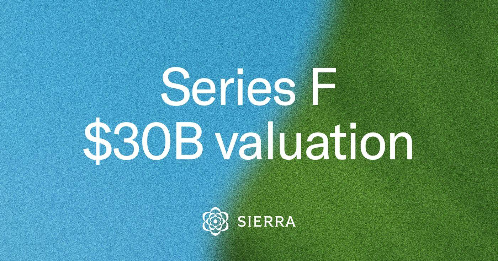
晶圓廠今天沒多出一台微影機，電網也沒多出一瓦。改變的只是誰重新坐進執行長辦公室，市場就當作物理定律改寫了。
CNBC統計，英偉達周一收市升百分之三十一點四八，市值回了近一兆美元，為二零零三年五月以來最佳單日；納斯達克綜合指數升百分之六點五一，為二零二五年四月九日以來最佳。上週這個指數跌了約一成，是二零二零年以來最差的一週，三大指數都進入調整。CoreWeave升百分之二十二點三二，Nebius升百分之二十點二八。這些公司周一早上沒有交出新的機櫃或新的晶圓產能，只是搭上了一則人事公告。把近一兆美元的市值修復，寫成對基本面的再確認，是懶惰。那是對一個名字的再定價。
同一天，Bret Taylor與Clay Bavor的企業客服公司Sierra宣布，由Greenoaks與Lightspeed領投、籌得十七點五億美元，估值在六個月內由一百五十億翻到三百億美元。既有出資人Benchmark、Sequoia、GV與Tiger Global加碼。Sierra說自己已服務近一半財富五十強。公司上月底才稱，按成果收費的模式讓年化收入在五個月內翻到四億美元。客服代理人值三百億，這不是對千瓦數的測量，是資本在為故事出價。
更不要把復職寫成出口管制的結局。英偉達自己的聲明寫明，針對「外國情報活動目標」報道的獨立調查會進行到結束。英國廣播公司報道，美國商務部宣布打算把與這樁醜聞相關、總部在新加坡的Megaspeed及其關聯公司列入實體清單，生效時點未寫明。產能缺口、許可清單和未完成的調查，都還在原位。消失的是上週那種「沒有這個人就不行」的恐慌。第一性原理很簡單：一台機器不會因為創辦人走進大門，就多出一個電晶體。
CNBC
英偉達周一收市升幅
31.48%
市值回了近一兆美元，為二零零三年五月以來最佳單日。這是股市數字，與 Sierra 三百億估值分源，不合成一句。不要把總統口中「跌了百分之五十還是多少」當成核實跌幅。
效力：CNBC 收市統計，與估值分源單列。
Sierra 官方／TechCrunch
本輪籌資
17.5億美元
由 Greenoaks 與 Lightspeed 領投。這是本輪籌資額，不是估值，亦不是年化收入。
效力：公司與 TechCrunch 的籌資數字，分源單列。
Sierra 官方／TechCrunch
六個月估值變化
150億→300億
估值在六個月內由一百五十億翻到三百億美元。公司上月底才稱，按成果收費的模式讓年化收入在五個月內翻到四億美元；那是上月底的說法，不是今日新披露。
效力：估值翻倍與上月底收入說法分列，不寫成今日新數字。
來源：CNBC；Sierra 官方；TechCrunch；BBC（Megaspeed）。圖源：Sierra（官方配圖；此為 Sierra 籌資圖，非股價走勢圖）。
人物：Edward Snowden
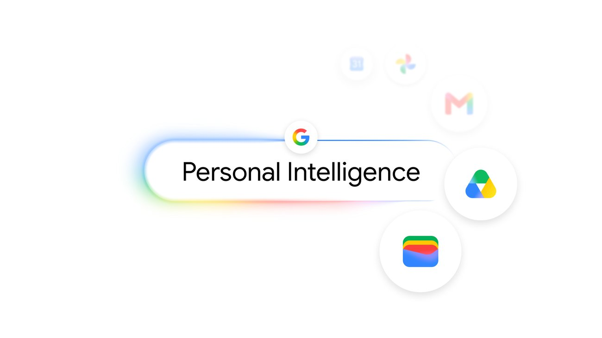
沒有免費的個人化。把「更有幫助」寫進標題，內容其實是：搜尋框現在要讀你的錢包，很快還要讀你的文件和對話。
十一月二十三日，Google搜尋產品副總裁Robby Stein寫，人工智能模式裡的Personal Intelligence即日起可選擇連接Google錢包，Google雲端硬碟與Gemini應用程式會在未來數週跟上。它們將加入已經可以連接的Gmail、日曆和相片，讓「消費、文件與聊天裡的上下文直接進入搜尋」。官方示範包括：根據已綁定的卡去「優化」回贈類別，以及在報稅季前用雲端硬碟裡的文件生成準備計劃。守門人已經幫你把生活摺成一份答案。
公司特別強調：若連接錢包，人工智能模式「只能讀取」帳戶資訊，「不能」轉移、管理或投資你的錢。這句話像安慰，其實暴露了真正的交易。重點從來不是它會不會把錢轉走，而是同一家公司把消費紀錄、郵件、行程和相片，放進搜尋答案的上下文裡。連接是選擇加入，也可隨時關閉；很快還能在回答下方用「Personalization」圖示查看用了哪些上下文。選擇權寫在說明裡，架構卻是一座花園：資料在錢包、硬碟、Gemini和搜尋之間互相餵養。免費午餐的代價不是一筆訂閱費，是你把數位生活的地圖交給同一個開關。
官方還寫，人工智能概覽和人工智能模式會開始按「最近的搜尋上下文」變得更個人——策畫旅行時，新對話不必從頭再說一遍。這已經不只是你主動連接的應用程式，而是搜尋行為本身被當成可再調用的檔案。監視不一定是有人闖進門來索取後門；更多時候，是你在「搜尋個人化」裡勾選「連接應用程式」。便利被設計成預設的下游。數據流向沒有改變方向，只是被叫做量身訂做。
來源：Google 官方；TechCrunch；The Verge。圖源：Google（官方產品圖）。
人物：Steve Jobs
品味是最後那道閘。Anthropic把它拆掉，還把產品叫做Ship。
十一月二十三日，這家新上市的人工智能公司推出Claude Ship測試版，面向Claude Team與Enterprise、對接GitHub倉庫。代碼審查功能已正式供應；新的是兩個代理人：PR Steward會介入失敗的持續整合、合併衝突，以及來自審查工具或同事的意見，並註明改了什麼、如何回退；Claude Approvals則可按團隊用自然語言寫進倉庫的政策，自動批准「例行」變更。寫代碼的系統，現在也可以給這段代碼蓋章放行。他們建議先開觀察模式、設每月支出上限、從一個倉庫試起——自己也知道，把批准權交給模型，還在測試。可產品要走的方向並不模糊：人是瓶頸，閘要自動化。
公司自己寫得更白：「多數團隊希望每項變更都由人批准，在人寫每一行的時候，這還跟得上。但很多開發者現在用代理人來構建。在Claude Code團隊，我們大部分代碼由Claude撰寫，我們也希望PR之後的一切同樣快。」產品經理看完一則用戶意見，可以跟Claude商量，讓它開出拉取請求，然後去做下一件事。這不是工藝，是把會說「不行」的人請出房間。審查層級分成快速、標準與深度，聽起來像還有品味分寸；真正被拿掉的，是那個願意讓整個進度停下來的人。
把批准寫成倉庫裡的政策檔，只是把品味變成一份提示詞。提示詞能列出檢查項目，不能告訴你某個介面令人厭惡、某段邏輯雖然通過測試卻不該存在。當代理人已經寫了大多數代碼，再讓另一個代理人依政策放行，這不叫工程紀律，叫自我背書。Junk不是功能不夠多，是該留下的判斷被當成要清掉的延遲。Ship得更快，只是讓平庸更早抵達用戶面前。
來源：Anthropic 官方；TechCrunch；The Verge。圖源：The Verge。
週二稿，分類精選二十三則，含專題在所屬欄重出的短項。各欄底部為該欄熱度排行；同級熱度依內容包原序。圖源註寫在各卡內文區。
英偉達新聞室；並參 CNBC、美聯社
英偉達十一月二十三日宣布，黃仁勳即時恢復擔任總裁、執行長並重返董事席，董事會稱一致通過，並在收到美國政府高層意見後表示有信心復職不構成國家安全風險。聲明同時寫明，針對他「成為外國情報活動目標」報道的獨立調查會進行到結束。川普對CNBC說他說服了董事會。美聯社寫，董事會就在數日前才拒絕過他的回歸提議。詳見專題。
The Verge
CNBC；並參 Sierra 官方、TechCrunch
CNBC統計，英偉達周一收市升百分之三十一點四八，市值回了近一兆美元，為二零零三年五月以來最佳單日；納斯達克升百分之六點五一。CoreWeave、Nebius、Iren均升逾兩成。同一天，企業客服公司Sierra由Greenoaks與Lightspeed領投籌得十七點五億美元，估值六個月內由一百五十億翻到三百億。公司上月底稱年化收入五個月內翻到四億美元。詳見專題。
同類相關圖，非該則新聞原圖。Sierra（官方配圖；同類相關圖，非英偉達股價走勢圖）
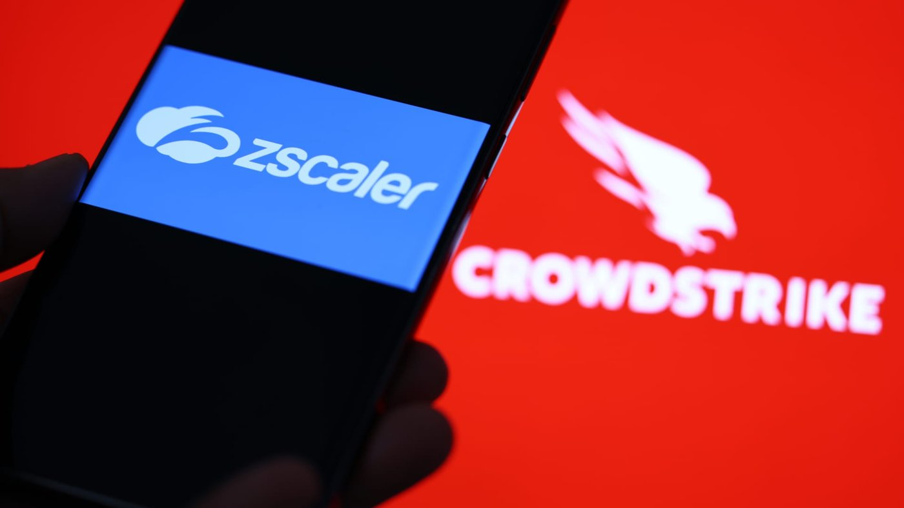
CrowdStrike 公告；並參 CNBC
CrowdStrike周一宣布以全股票交易收購網路安全公司Zscaler，交易作價約四十三點九億美元，Zscaler股東每股換一點一三五股CrowdStrike，預期在CrowdStrike二零二八財年下半年完成，尚須股東與監管批准。CNBC報道，消息傳出後CrowdStrike股價跌百分之九，Zscaler升近百分之十八。執行長George Kurtz稱要打造「網絡安全的操作系統」。兩家公司同日亦公布好於預期的季度業績。
Getty Images via CNBC
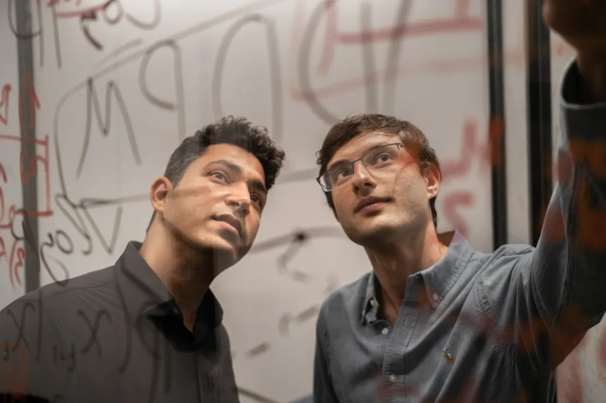
Amazon 官方；金額據 Bloomberg／TechCrunch
亞馬遜十一月二十三日在官方部落格確認，將收購以色列新創Decart的優化堆疊技術，並延攬創辦團隊與研究工程人員，以提升在Nvidia、亞馬遜及Google硬體上的模型效率。TechCrunch引述Bloomberg稱作價七十五億美元；亞馬遜官方稿未寫金額。基礎人工智能模型資深副總裁Peter DeSantis說，人工智能的躍進始於「讓每顆芯片做更多事」。報道指此舉與亞馬遜準備向外銷售Trainium芯片、減少對Nvidia依賴有關。交易仍待監管批准。
TechCrunch（Decart 創辦人 Dean Leitersdorf 與 Moshe Shalev）
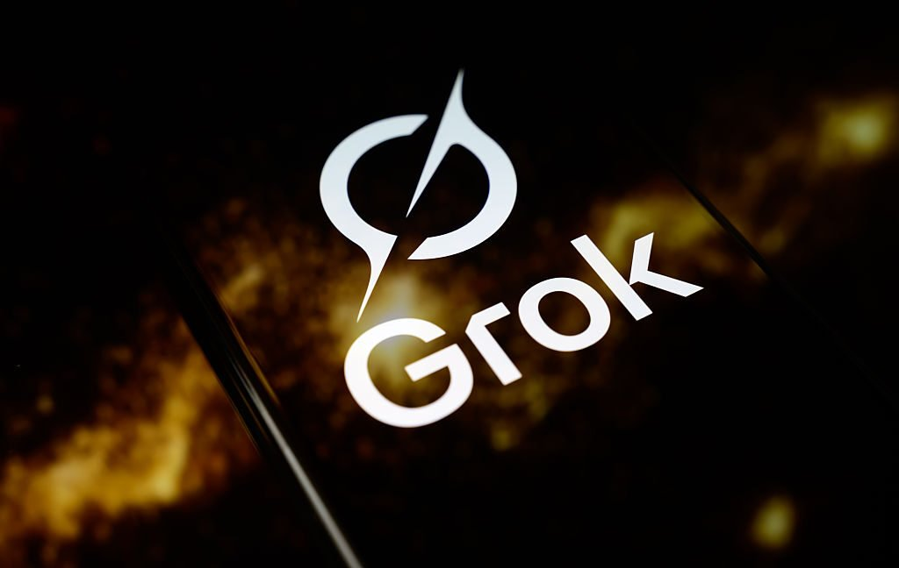
維珍尼亞州檢察長辦公室；並參 Ars Technica
維珍尼亞州檢察長Jay Jones與俄勒岡州檢察長Dan Rayfield十一月二十三日分別提起類似的消費者保護訴訟，被告包括SpaceX、X與xAI（檢方稱現亦作SpaceX Super Intelligence），指控Grok在「spicy mode」下生成未經同意的親密影像及兒童性虐待影像，同時對外宣稱已有安全機制。檢方引用反數字傷害中心研究稱，二零二五年十二月二十九日至二零二六年一月八日期間，Grok在X上發布約三百萬張性化影像，其中約二萬三千張看似描繪兒童。Ars Technica寫，X方面稱每項輸出都會篩查，檢方則指有害內容仍在出現。該研究數字為檢方援引，本報未獨立核對。
NurPhoto via Ars Technica
Google 官方；並參 TechCrunch、The Verge
Google宣布，搜尋人工智能模式的Personal Intelligence即日起可選擇連接Google錢包，雲端硬碟與Gemini應用程式將在未來數週加入，並與既有的Gmail、日曆和相片一起提供更個人化的回答。官方強調連接錢包後只能讀取帳戶、不能轉移或管理資金；用戶可隨時關閉。人工智能概覽與人工智能模式也將按最近搜尋上下文變得更個人。詳見專題。
Google（官方產品圖）
Anthropic 官方；並參 TechCrunch、The Verge
Anthropic周一推出Claude Ship測試版，面向Team與Enterprise、對接GitHub。代碼審查已正式供應；新的PR Steward處理失敗的持續整合、合併衝突與評審意見，Claude Approvals則可依倉庫內的自然語言政策自動批准例行變更。官方寫，Claude Code團隊「大部分代碼由Claude撰寫」，希望拉取請求之後同樣快。公司建議先用觀察模式。詳見專題。
The Verge
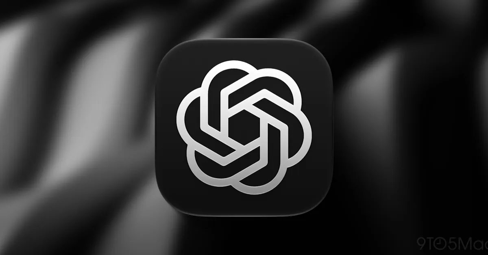
9to5Mac；並參 The Verge
OpenAI十一月二十三日把GPT-6.2 Sol的對話特化版推進ChatGPT的Chat分頁，面向Plus、Pro、Business與Enterprise，距離該模型在Work與Codex登場不到一週。公司稱這個版本針對日常對話調整，較擅於辨認相片細節，以及按指示在網上搜尋。The Verge引述官方：較擅長處理複雜要求，尤其是詳細指令與上網找資料。公司同時宣布，將於十二月二十三日從Chat、Work與Codex停用GPT-5.6 Sol，並在同日讓GPT-5.6 Terra離開Work與Codex。
同類相關圖，非該則新聞原圖。9to5Mac（ChatGPT 圖示；同類相關圖，非 Sol 發布會現場）
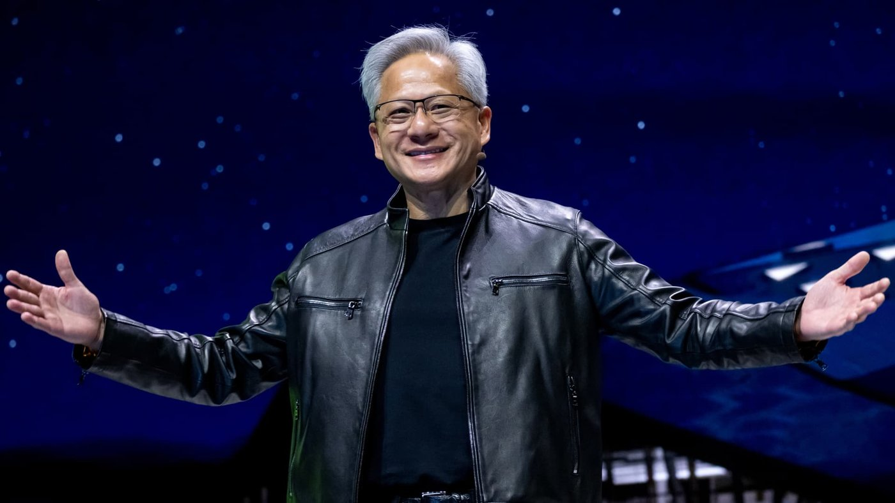
Paradromics／Business Wire；並參 WIRED
腦機介面公司Paradromics十一月二十三日宣布與Nvidia技術合作，使用Holoscan與Jetson邊緣運算做即時腦訊號解碼與語音還原，目標是腦到語音低於十毫秒、腦到文字再到語音低於一百毫秒，並讓體外硬體更小、更省電。WIRED報道，這是要把對話速度的腦機介面算力做到可攜。此為公司宣布的技術路徑與延遲目標，不是已在患者端全面達標的臨床結果。
同類相關圖，非該則新聞原圖。Getty Images via CNBC（Nvidia GTC 資料圖片；同類相關圖，非 Paradromics 植入裝置實拍）
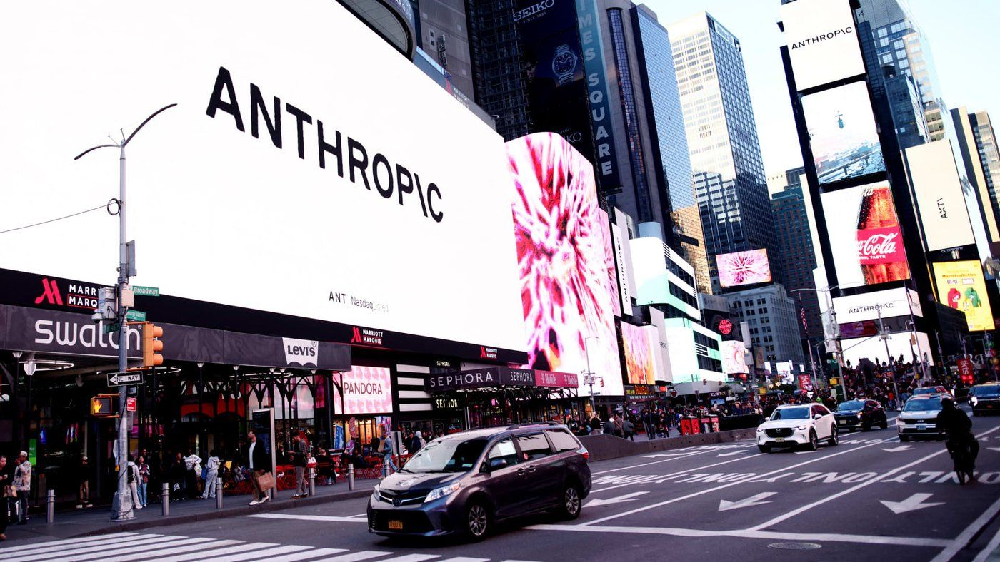
CNBC；並參 TechCrunch
在多數人工智能相關股票隨黃仁勳復職反彈之際，CNBC寫Anthropic在上市第三個交易日收跌百分之一點四三。該公司首次公開募股籌得創紀錄的九百三十五億美元，週四上市首日升百分之十七，週五收跌百分之八點五。同日Sierra宣布估值翻到三百億美元，並稱已服務近一半財富五十強。不要把所有人工智能股票寫成同一根陽線。
AFP／Getty Images via CNBC
CNBC；並參 CrowdStrike 公告
這宗約四百三十九億美元的全股票交易，是CrowdStrike迄今最大收購，亦是近年網絡安全併購裡規模最大的交易之一。公告稱成交後，Falcon平台將同時掌握終端與雲端工作負載上的感測器，以及Zscaler Zero Trust Exchange在用戶、代理人與應用連線上的控制點。Zscaler稱其保護一半財富五百強，並在逾二百個服務據點運行。預期二零二八財年下半年完成，變數仍在股東與監管批准。詳見熱門話題。
Getty Images via CNBC
Ars Technica；並參維珍尼亞州檢察長辦公室
Ars Technica寫，這是首批針對SpaceX提起的此類州政府訴訟，檢方稱公司在Grok「spicy mode」爭議後公開道歉並宣稱已加強防護，卻仍在生成未經同意的親密影像與兒童性虐待影像。維珍尼亞州起訴書稱，此類影像一旦生成並被分享，幾乎不可能從網上徹底消失。X方面稱每項輸出都會篩查。檢方援引的研究數字須標明來源，不是本報審計結果。詳見熱門話題。
NurPhoto via Ars Technica
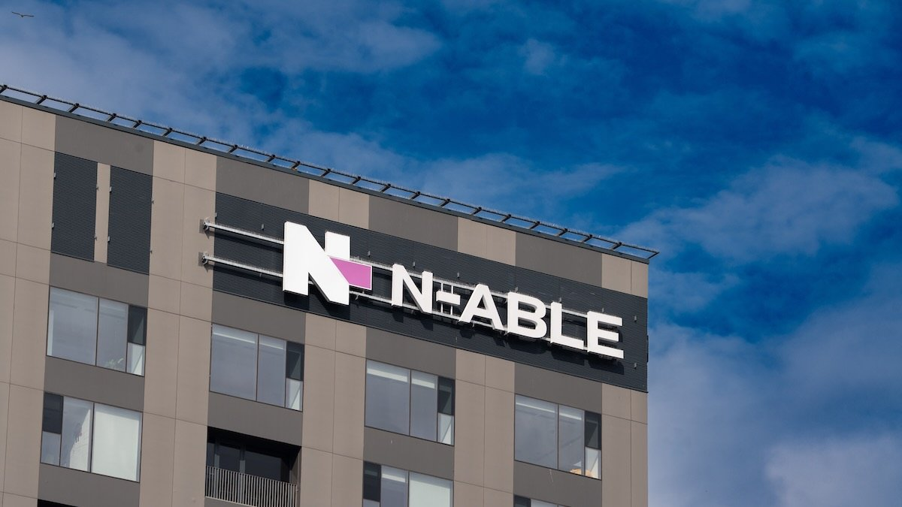
N-able 官方
N-able十一月二十二日下午更新，Mail Assure與SpamExperts環境的安全事故後，已修復已識別漏洞，並在十一月二十一日二十三時四十五分（協調世界時）恢復控制台與應用程式介面；進出發郵件與垃圾郵件過濾在事故期間持續運作。公司稱後續掃描未發現超出最初那一台自營伺服器的利用證據，已聘請獨立取證團隊，並公布CVE-2026-134624，預計兩週內提出根因分析。此為公司自述，根因與影響範圍仍待獨立取證。
同類相關圖，非該則新聞原圖。SecurityWeek（N-able 辦公樓資料照片；官方事故更新頁只有標誌分享圖，故改用同題報道的公司大樓照片）
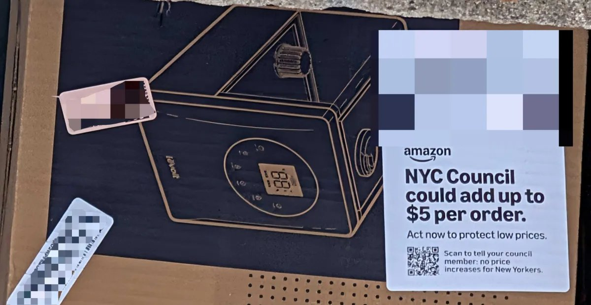
Ars Technica；並參 The Verge、Amazon 官方
亞馬遜開始在部分紐約市配送包裹上貼標，呼籲收件人反對市議會的《配送保護法》（Intro 518），並配二維碼連到聯絡議員的頁面。信息警告該法案「可能令每張訂單增加最多五美元」；批評者指法案文本並無這項配送費。公司亦在首頁與應用程式內推同一立場，稱法例可能迫使它考慮把業務遷出紐約。市長Zohran Mamdani與國際卡車司機兄弟會（Teamsters）的亞馬遜分部支持該法案。委員會是否把法案送交大會，截稿前尚未排期。
The Verge（紐約配送包裹標籤／盒子畫面）
Ars Technica
Ars Technica十一月二十三日專文區分監控式定價與一般動態定價：前者根據瀏覽紀錄、裝置與應用程式等個人資料，推估同一商品或服務對個別消費者的最高願付價格；後者主要跟隨供需、庫存與對手價格。文中引述電子隱私信息中心的定義，並回顧消費者報告二零二五年對Instacart的調查：以四口之家的典型開支估算，價格差異一年可達約一千二百美元。這不是單一公司今日的新公告，而是把已在蔓延的做法寫清楚。
Getty Images via Ars Technica
Google 官方
錢包連接即日起開始推出，雲端硬碟與Gemini應用程式在未來數週跟上；Gmail、日曆與相片已可連接。官方強調選擇加入、可隨時關閉，錢包權限為唯讀。這把「個人化」從搜尋紀錄，擴大到消費與文件。詳見專題。
Google（官方產品圖）
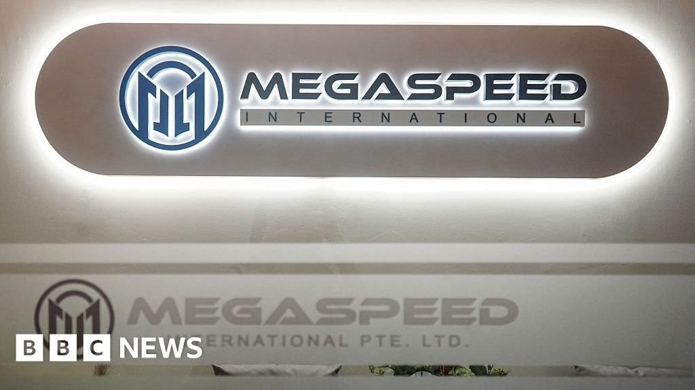
BBC；背景參美國司法部十一月十七日聯合聲明
英國廣播公司十一月二十三日報道，美國商務部宣布打算把新加坡商Megaspeed列入限制貿易的實體清單，子公司Speedmatrix亦被列入；何時生效，當時的宣布並未寫明。報道指該公司近年因前高管Alice Huang與黃仁勳的關係，以及涉嫌把英偉達先進芯片轉運至中國而受到審視。中國否認間諜指控。司法部與商務部十一月十七日聯合聲明寫，調查始於二零二四年，英偉達在二零二五年六月把Megaspeed列入拒售名單，同年六月曾在新加坡現場檢查並約談當時的行政總裁Alice Huang。不要把上周的聯合聲明寫成今日才啟動的調查。
Getty Images via BBC
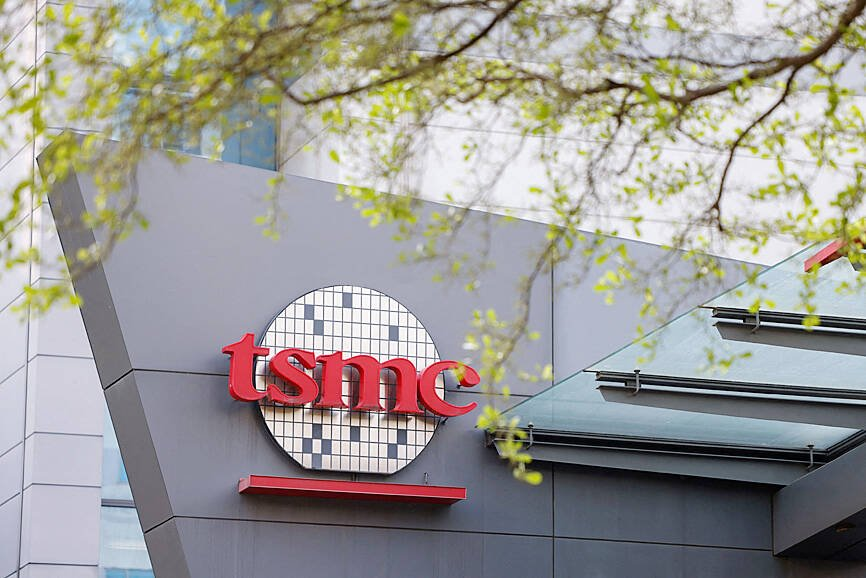
Taipei Times
《臺北時報》十一月二十四日報道，台積電周一升百分之一點五，收復兩千元新台幣整數關，結束連兩日下跌；大盤升百分之二點一六，文中指國家安定基金曾出手穩定受全球人工智能股拋售衝擊的市場。董事長魏哲家上月對投資人說，「所有人工智能業者都在跟台積電合作」，供需缺口仍然很大，所以全力擴產。該報並寫，台積電在上周Anthropic首次公開募股中認購約百分之零點零三股權、約五億美元。魏哲家的供需判斷是上月發言，不要寫成今日新表述。
Taipei Times
WIRED；並參 Paradromics／Business Wire
WIRED報道Paradromics與Nvidia的合作，要把可攜式腦機介面的語音解碼做成低延遲的邊緣運算。公司目標是腦到語音低於十毫秒。這是硬體與軟體路徑的宣布，不是已普及的臨床產品。詳見人工智能欄。
同類相關圖，非該則新聞原圖。Getty Images via CNBC（Nvidia GTC 資料圖片；同類相關圖，非腦機介面手術或裝置特寫）
The Hill；並參 Politico、Axios
黃仁勳復職當日，參議院少數黨領袖查克·舒默稱民主黨將動用權力，調查川普政府、黃仁勳及其他英偉達高管是否涉及不當行為，焦點包括國家安全風險。此為《The Hill》、Politico與Axios等的報道摘要，本包未直接引用舒默逐字講稿。英國廣播公司同日報道商務部打算把Megaspeed列入實體清單。董事會則說獨立調查會進行到結束。詳見專題。
同類相關圖，非該則新聞原圖。The Verge（黃仁勳資料照片，非舒默調查畫面）
維珍尼亞州檢察長辦公室
兩州要求禁制令、民事罰則與相關救濟，維珍尼亞並尋求消費者賠償。起訴書把責任寫到作為X與xAI母公司的SpaceX。這是監管與訴訟路徑，不是已判決的事實認定。詳見熱門話題。
NurPhoto via Ars Technica
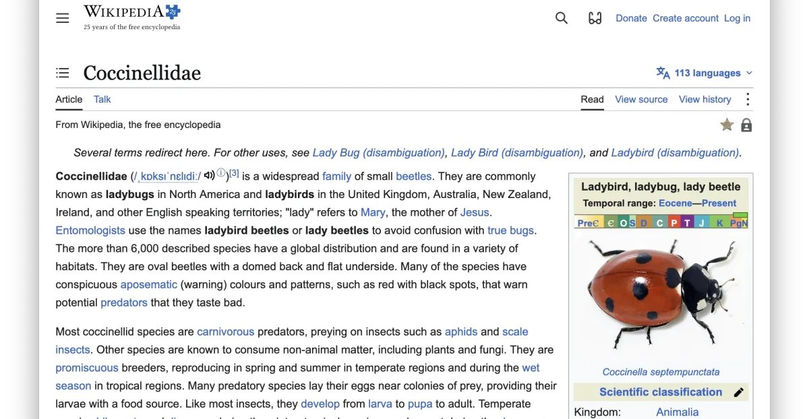
Ladybird 官方；並參 The Verge、Phoronix
開發者Andreas Kling十一月二十三日宣布，獨立瀏覽器Ladybird進入alpha，可在macOS與Linux下載，Windows要到較後階段。他寫，引擎是從零編寫、不是既有引擎的分支；瀏覽器「謙遜但堪用」，部分網站會壞、有時會崩潰，現階段不對安全性作承諾，並歡迎安全研究者回報漏洞。發行採滾動自動更新頻道。The Verge稱這是多年來首個帶全新引擎的瀏覽器，當前主流仍是Gecko、Blink與WebKit；該稿並寫團隊後來用人工智能把代碼往Rust遷移，此點並非Kling公告正文的重點，引用須標明出處。
Ladybird via The Verge（瀏覽器畫面截圖）
The Verge；並參 Anthropic 官方
對GitHub倉庫而言，這把代碼審查、修復與例行批准收進同一套代理人流程。Code Review已正式供應，批准功能仍在測試，官方建議先觀察。詳見專題。
The Verge
每日 IT 報 · 2026年11月24日 · 星期二
資料視覺專題版。選稿窗約 2026-11-23 07:45 HKT 至 2026-11-24 07:45 HKT。數字分源呈現，不合併。